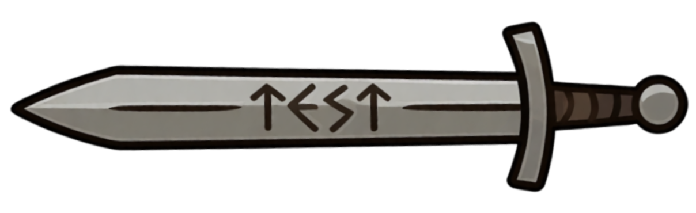
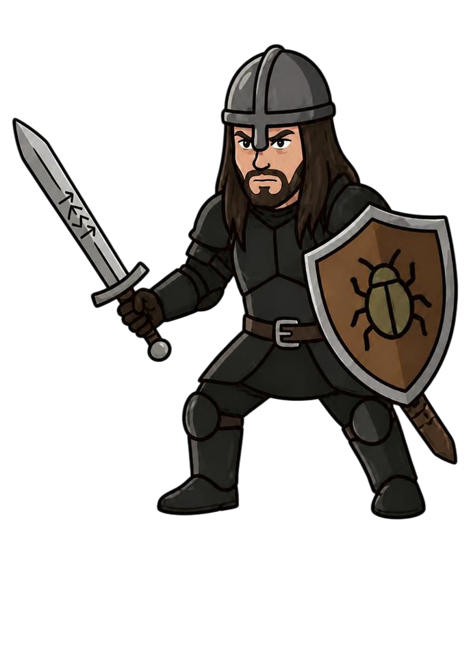
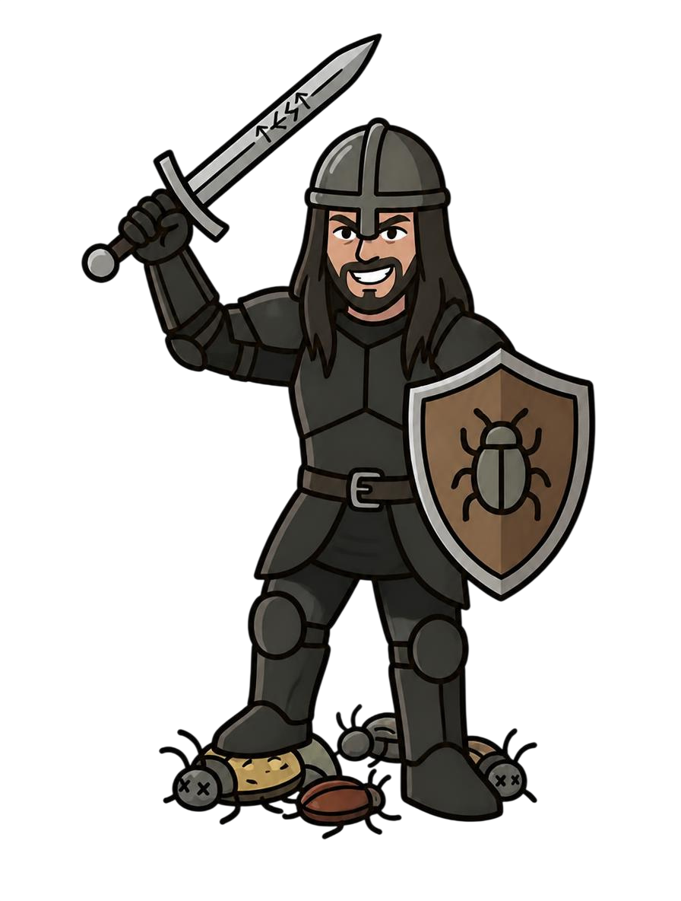
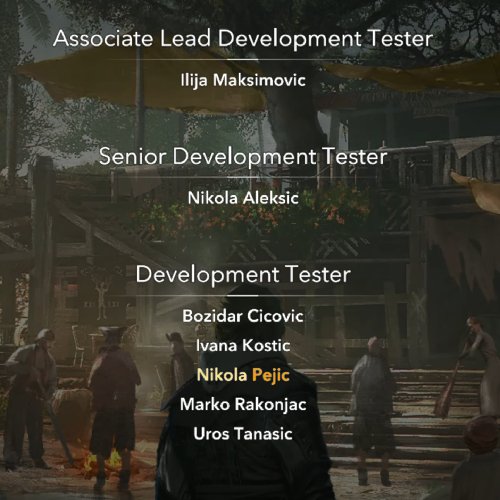
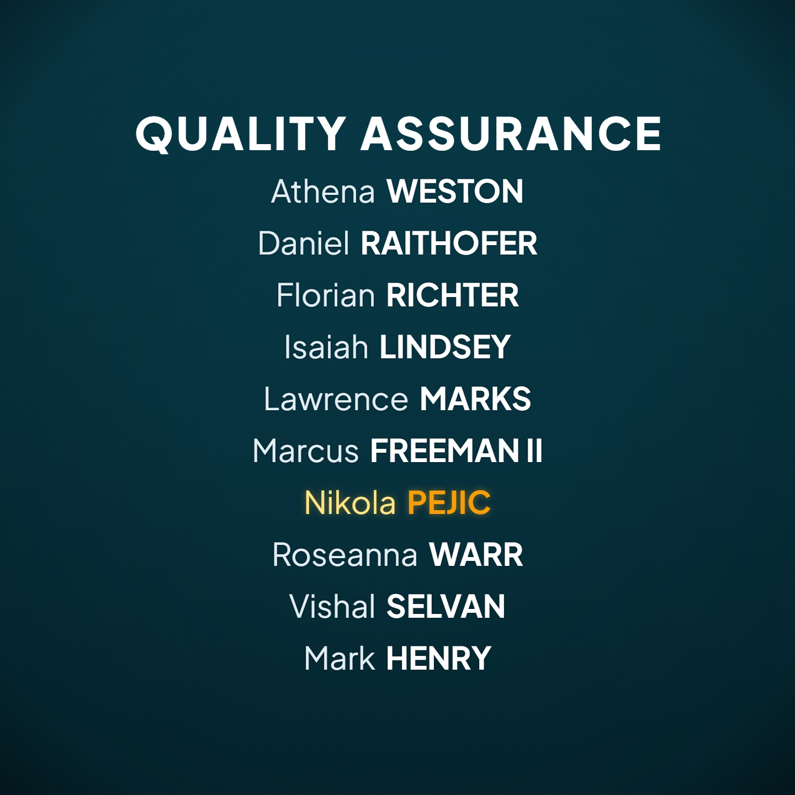
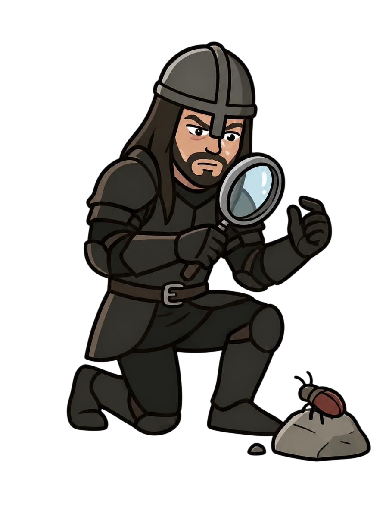
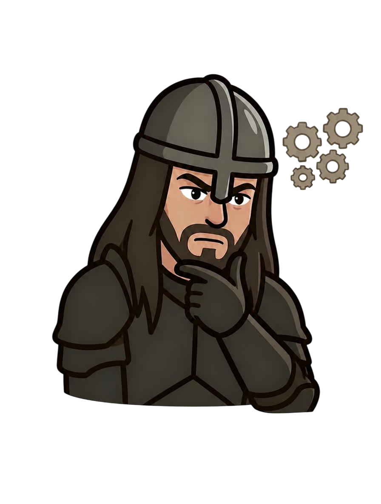
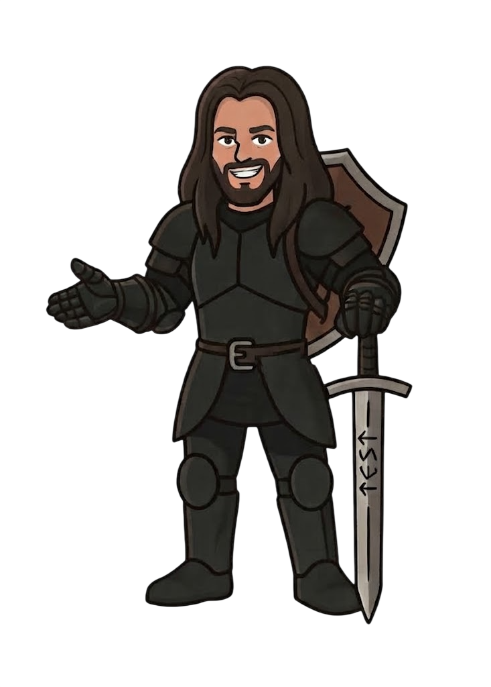
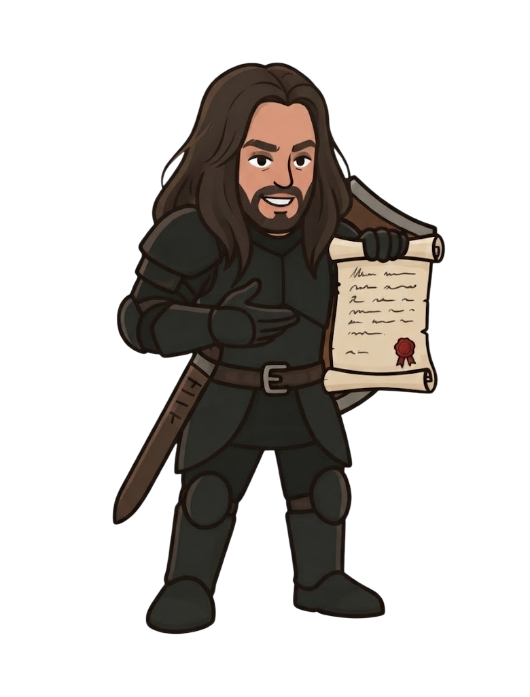

Manual Testing
Hands-on testing focused on finding functional, usability, and unexpected issues.
Professional QA and software testing services focused on finding issues early, reproducing them reliably, and helping you ship with confidence.

HIRE THE MERCENARY
I'm Nikola, a QA professional with 4.5 years of hands-on experience in AAA game development.
I've worked as a Development Tester at Ubisoft Belgrade, contributing to major franchises across multiple platforms.
My approach combines structured testing with exploratory investigation, with a focus on finding issues, reproducing them reliably, and communicating them clearly.

4.5 years of hands-on QA experience in AAA game development, across multiple platforms, projects, and testing environments.



Hands-on testing focused on finding functional, usability, and unexpected issues.
Verifying that features work as intended and behave according to requirements.
Verifying that new changes have not introduced new issues or broken existing functionality.
Creating clear, structured test cases and QA documentation that make testing easier to execute, track, and maintain.
Creating clear and structured test cases and QA documentation.
Clear, reproducible and actionable defect reports.

Understand the product, its risks, features, and what needs to be tested.
Use structured and exploratory testing to uncover issues from different perspectives.
Document issues clearly with precise steps, expected results, and useful evidence.
Retest fixes, verify expected behaviour, and confirm issues are properly resolved.
Thorough testing.
Clear reports.
Fewer surprises.

Have a project that needs testing? Let's talk about what you need and how I can help.
Get in Touch